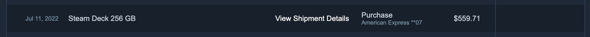
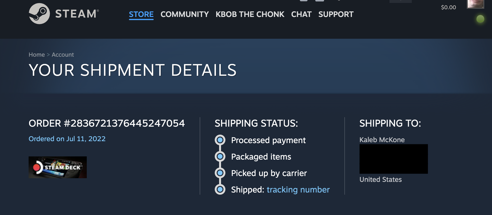
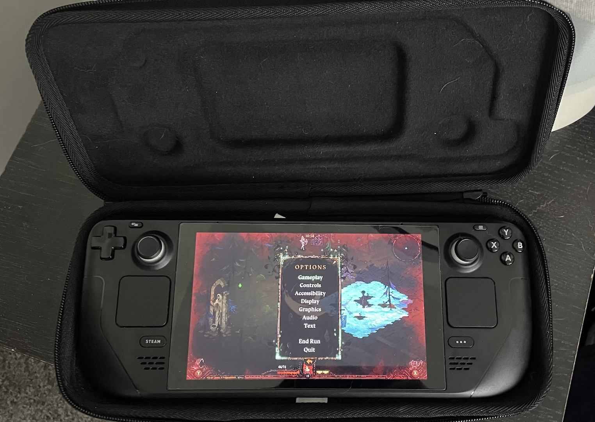
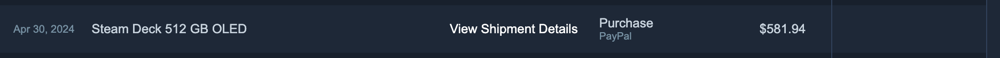
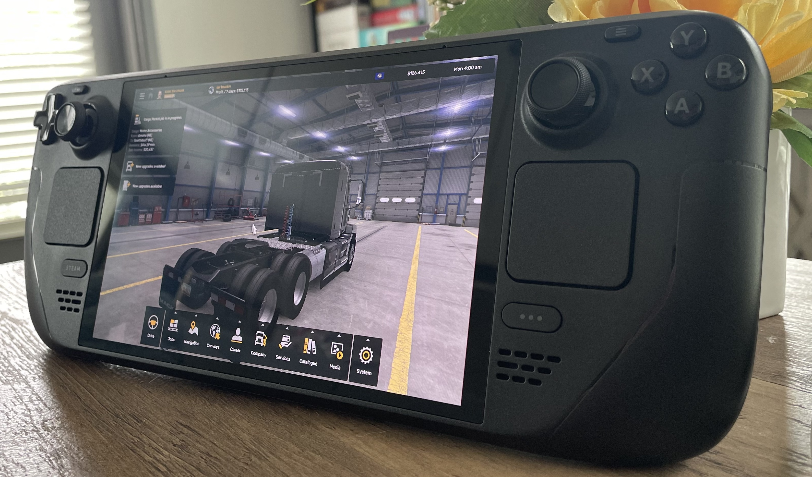

This is a short essay on my time so far with the Steam Deck, both LCD and OLED versions.
I first received my Steam Deck LCD 256GB in July of 2022. I had been waiting for about 4 or 5 months at this point after putting five dollars down to reserve one.


In summer of 2022 I was excited to get the steam deck for a few reasons. Since the Deck's announcement the year prior, I figured that having most of my Steam library available on a handheld would be a huge game changer and I'll get into why that is later. In addition to games, it was just a little linux machine that made it easy to get to the regular linux desktop. It has a separate dock that you can plug your USB devices and monitor into. Even if I'm not one to hack away at linux all day, I think it's really good that a reliable and easy to use Linux device is now so easy get your hands on. On the controls front, the track pads were an improvement over the steam controller's that came out around 2015 and the back paddles added additional function while letting you keep your thumbs on the track pads or sticks. The LCD screen at the time was honestly not something I considered either good or bad, however, the later OLED version that we'll get into is a clear improvement over the first iteration's. I'll mention this more than once, but I work at the computer for multiple hours at a time during the day. Sometimes the last thing I want to do at the end of a work day is continue to sit at my desk and play PC games. Even though I really enjoy gaming on my desktop with a 7900 XT and 170Hz monitor, one can only ensure so many hours looking at the same screen in the same room in the same chair per day.
Games with native linux support work great with no tweaking necessary in general. Proton also enables tons of windows-built games to run just fine on Steam Deck. Some games over time lose proton compatibility through later updates but in general proton is a great bit of software in the linux gaming space. On that front though Valve has put in tons of work to make all of the software around the controller configuration system powerful and exposes a ridiculous amount of options, particularly for the track pads and joy sticks. When I wanted to try a game without native controller support, I did have to take 10-20 minutes to mess with some options. When playing FPSs, I want to use the right track pad as either mouse or joystick-like-mouse. The sensitivity is important to get comfortable although I still don't have the perfect formula for this. I've been finding that most games are a little different in how they handle mouse input and things may get lost in translation through all of the software layers handling the steam deck input. Regardless, it's pretty easy to get a right track pad configured per game that works well. A lot of users also recommend a track pad + gyro setup for FPSs although I still have not really gotten the hang of that.

There's lots of open source plugins as well that you can get for your deck, like one that shows you information from the third party ProtonDB for each of your games. Sometimes user-provided data on ProtonDB is more accurate than Valve's internal testing, so this is useful to have handy. The steam deck's native resolution is 1280*800 at 16:10 so games that natively support this resolution will not cause any black bars around the deck's screen. As an alternative, you can set the in-game resolution to 1280x720 and use the deck's built in scaling mode to remove the black bars. This comes at the cost of stretching/distoring the image, though.
Here is my summary/generalization for features that should allow the game to play well on Steam Deck:
One additional feature of the steam deck that may go overlooked is the support for multiple controllers simultaneously, just like a console. For example, split screen in local-coop games should just work if you connect multiple controllers to the deck. This works great with the steam deck dock plugged into a TV.
| Name | Steam Deck Time | Last Played |
|---|---|---|
| Leaf Blower Revolution - Idle Game | 59.75 | June 9 2023 |
| Pillars of Eternity | 50.6 | March 20 2023 |
| Assassin's Creed Origins | 50.05 | November 26 2022 |
| Slay the Spire | 49.33 | December 25 2023 |
| Thronebreaker: The Witcher Tales | 41.7 | January 6 2024 |
| Grounded | 39.6 | August 30 2024 |
| Melvor Idle | 38.78 | September 16 2024 |
| Vampire Survivors | 36.83 | August 24 2023 |
| American Truck Simulator | 34.28 | June 4 2024 |
| Dread Delusion | 32.88 | June 30 2024 |
| Halls of Torment | 31.98 | July 27 2024 |
| The Long Dark | 31.25 | August 11 2022 |
| System Shock | 28.65 | May 20 2024 |
| Terraria | 28.3 | October 14 2022 |
| Balatro | 27.68 | July 15 2024 |
| Hardspace: Shipbreaker | 27 | July 14 2024 |
| Palia | 26.55 | April 24 2024 |
| Fallout 3 - Game of the Year Edition | 24.18 | July 23 2023 |
| Nova Drift | 23.4 | September 5 2024 |
| Backpack Battles | 21.43 | August 28 2024 |
| War Thunder | 20.9 | July 24 2024 |
| The Talos Principle | 19.88 | November 26 2023 |
| Death Must Die | 19.07 | July 20 2024 |
| Blasphemous | 18.27 | September 8 2023 |
| Into the Breach | 17.83 | September 15 2023 |
| The Binding of Isaac: Rebirth | 17.6 | February 21 2024 |
| Corpse Party (2021) | 16.67 | December 10 2022 |
| 20 Minutes Till Dawn | 15.3 | September 10 2023 |
| Fable Anniversary | 15.27 | August 23 2022 |
| Lawn Mowing Simulator | 14.87 | August 20 2022 |
| Bugsnax | 14.1 | August 30 2022 |
| Brotato | 12.95 | January 29 2024 |
| Garden Story | 12.78 | September 13 2022 |
| DAVE THE DIVER | 12.37 | December 10 2023 |
| Overcooked! 2 | 12.15 | May 17 2024 |
| Teardown | 11.65 | November 23 2023 |
| Megaloot | 11.6 | September 16 2024 |
| SIGNALIS | 11.22 | June 3 2023 |
| Moonlighter | 10.8 | August 25 2023 |
| ENDLESS™ Space - Definitive Edition | 10.73 | December 16 2022 |
| Half-Life 2 | 10.33 | July 23 2022 |
| Dead Cells | 10.02 | April 21 2024 |
| Return of the Obra Dinn | 8.83 | October 22 2023 |
| Yes, Your Grace | 8.77 | July 30 2022 |
| UnderMine | 8.45 | September 16 2022 |
| Darkwood | 8.15 | February 16 2024 |
| Stacklands | 7.67 | April 8 2024 |
| Monster Hunter: World | 7.43 | June 30 2024 |
| Patch Quest | 7.18 | October 1 2023 |
| Quake II | 6.93 | October 7 2023 |
Not all of the bullet points above should be given the same weight, but games that I enjoy the most on Steam Deck basically meet all of those. Occasionally I will play a game that maybe only supports 16:9 resolutions but that is probably the most minimal of compromises to make. If your game requires a ton of controller configuration mapping or runs poorly performance-wise, that's something that is better played on your more powerful gaming PC with mouse and keyboard.

For Christmas 2023 I got my wife an OLED version so we could play co-op games together on the couch. Since I was too excited to let my wife open it up herself, I broke into the package in early December to turn it on for the first time. I was surprised with the difference in weight and improvement in screen. However, I was still on the fence about upgrading my LCD. It only took 6 months for my jealousy to boil over after watching my wife play her OLED while I still used my LCD. In May 2024 I sold my LCD on Facebook marketplace for $260 and ordered an OLED 512GB.
Basically, jealousy.
Some people online have been saying the OLED is at most a side-grade to the LCD.
In my opinion the OLED is an upgrade in its own right. I am very pleased with the perceived decrease in weight on the OLED and I notice the difference over longer play sessions. If you already have an LCD and enjoy it then I would say stick with it, but I personally wanted the better screen and reduced weight. The improved Wifi and battery are also nice additions.

I was able to list my dislikes about the LCD around the screen and weight because the OLED was able to bring obvious improvements to those areas. Without the OLED the comparison would not be possible.